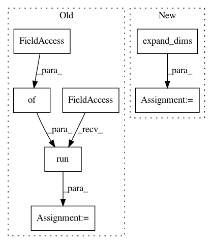

855d29dba61a53553e8fc89237773368fd7e9cdf,research/object_detection/dataset_tools/context_rcnn/generate_detection_data.py,GenerateDetectionDataFn,_run_inference_and_generate_detections,#GenerateDetectionDataFn#Any#,108
Before Change
// There are already ground truth boxes for this image, just keep them.
return [input_example]
detection_boxes, detection_scores, num_detections = self._session.run(
[self._boxes_node, self._scores_node, self._num_detections_node],
feed_dict={self._input: [tfrecord_entry]})
example = tf.train.Example()
num_detections = int(num_detections[0])
After Change
return [input_example]
detections = self._detect_fn.signatures["serving_default"](
(tf.expand_dims(tf.convert_to_tensor(tfrecord_entry), 0)))
detection_boxes = detections["detection_boxes"]
num_detections = detections["num_detections"]
detection_scores = detections["detection_scores"]
example = tf.train.Example()
num_detections = int(num_detections[0])
In pattern: SUPERPATTERN
Frequency: 3
Non-data size: 7
Instances
Project Name: tensorflow/models
Commit Name: 855d29dba61a53553e8fc89237773368fd7e9cdf
Time: 2020-07-29
Author: sbeery@google.com
File Name: research/object_detection/dataset_tools/context_rcnn/generate_detection_data.py
Class Name: GenerateDetectionDataFn
Method Name: _run_inference_and_generate_detections
Project Name: tensorflow/models
Commit Name: 855d29dba61a53553e8fc89237773368fd7e9cdf
Time: 2020-07-29
Author: sbeery@google.com
File Name: research/object_detection/dataset_tools/context_rcnn/generate_embedding_data.py
Class Name: GenerateEmbeddingDataFn
Method Name: _run_inference_and_generate_embedding
Project Name: cheungdaven/DeepRec
Commit Name: c0f75b3a70cc2e433472de9dfd2406c685b561a9
Time: 2020-02-10
Author: soonmok.kwon@voyagerx.com
File Name: models/item_ranking/bprmf.py
Class Name: BPRMF
Method Name: train